Xiaocheng (Shawn) LuPhd Student
The Hong Kong University of Science and Technology |
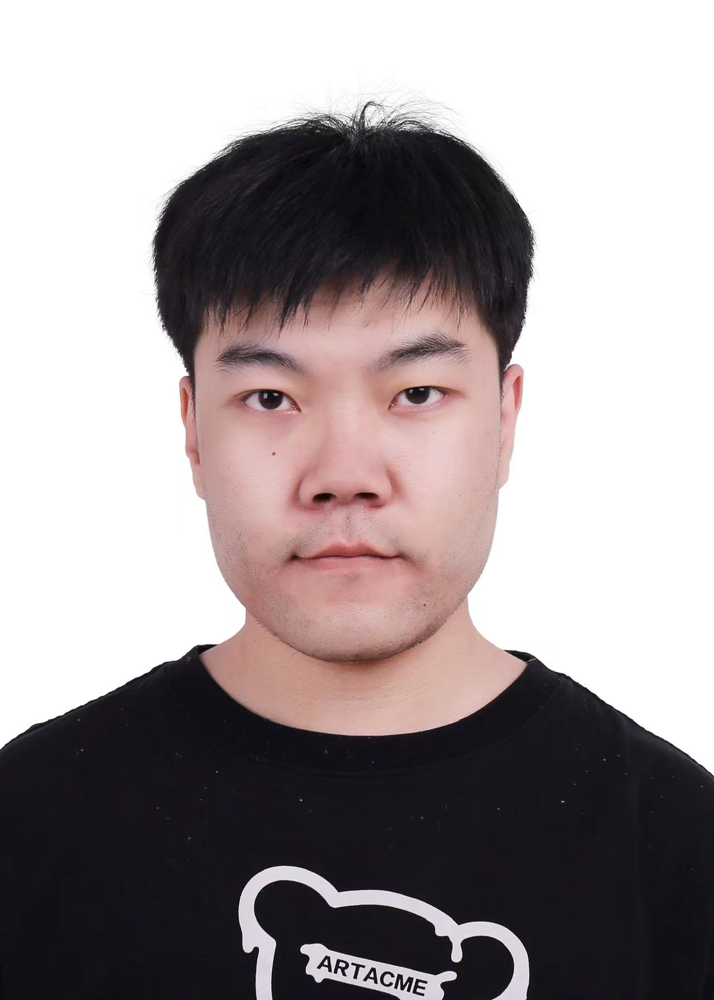 |


Biography
I am a PhD student of CSE at The Hong Kong University of Science and Technology (HKUST), under the supervision of Prof. Song Guo (IEEE Fellow). Currently, I am also a research intern at Shanghai AILab, supervised by Dr. Lei Bai.
Before that, I obtained my M.S. degree in Computer Science at Northwestern Polytechnical University NWPU, supervised by Qi Wang, Yuan Yuan and Xuelong Li professors. Also, I received my B.Eng degree at the School of Automation, Northwestern Polytechnical University (NWPU). During this period, my research areas included computer vision, image/video enhancement learning, scene text recognition, etc.
Recently, my research interests include Generative Models (Transformer/Diffusion/Flow), AI for Science, AIGC, MultiModal Large Language Models and Zero/Few-shot Learning.
If you are interested in these topics, please feel free to e-mail me. Thanks a lot!
News
- [01/2024] Two papers are accepted by IJCAI 2024!
- [10/2023] Now I move to Shanghai AiLab as an intern for Ai4Earth.
- [02/2023] Two papers are accepted by CVPR 2023!
- [01/2024] A repo for the CZSL paper list has been released; welcome to follow.
- [12/2022] One paper is accepted by AAAI 2023!
- [11/2022] The code for DFSP has been released.
- [02/2022] One paper is accepted by T-PAMI!
- [05/2021] One paper is accepted by ICMR 2021!
Working Experience
|
Shanghai AILab Oct. 2023 - Present, Shanghai AILab, Shanghai, China worked with Dr. Lei Bai as an Intern Topic: AI for Science and Generative Models |
|
|
The Hong Kong Polytechnic University Jan. 2023 - Aug. 2023, PEILab, Hong Kong, China worked with Prof. Song Guo as a Research Assistant Topic: Zero/Few-Shot Learning |
|
|
Tencent May. 2021 - Aug. 2021, Tencent, CSIG, Beijing, China Topic: Cloud Computing |
|
Education & Visiting

|
The Hong Kong University of Science and Technology, Hong Kong PhD Student in Parvasive Intelligence Lab, HKUST Advisor: Prof. Song Guo Spring. 2024 - Future
|
|
Northwestern Polytechnical University, China Master in Computer Science Advisor: Qi Wang, Yuan Yuan and Xuelong Li Sep. 2019 - Apr. 2022
|
|
|
Northwestern Polytechnical University, China Bachelor in Automation Sep. 2015 - Jun. 2019
|
Selected Publications | Full List
| /*Preprints*/ | |

|
Attribute-Aware Representation Rectification for Generalized Zero-Shot Learning Zhijie Rao, Jingcai Guo, Xiaocheng Lu, Qihua Zhou, Jie Zhang, Kang Wei, Chenxin Li, Song Guo arXiv preprint:2311.14750. 2023[paper] |

|
GBE-MLZSL: A Group Bi-Enhancement Framework for Multi-Label Zero-Shot Learning Ziming Liu, Jingcai Guo, Xiaocheng Lu, Song Guo, Peiran Dong, Jiewei Zhang arXiv preprint:2309.00923. 2023[paper] |
| 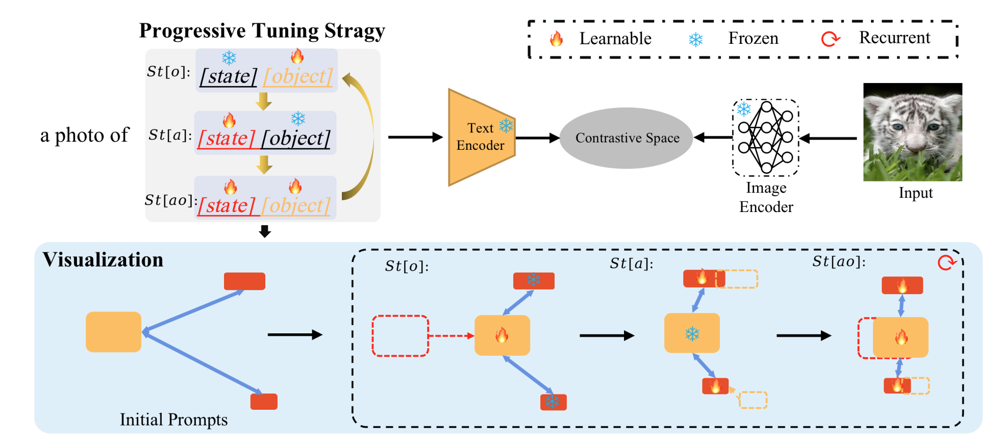 |
DRPT: Disentangled and Recurrent Prompt Tuning for Compositional Zero-Shot Learning Xiaocheng Lu, Song Guo, Jingcai Guo, Fushuo Huo, Sikai Bai, Tao Han arXiv preprint:2305.01239. 2023[paper] |
/*Journal*/ |
| 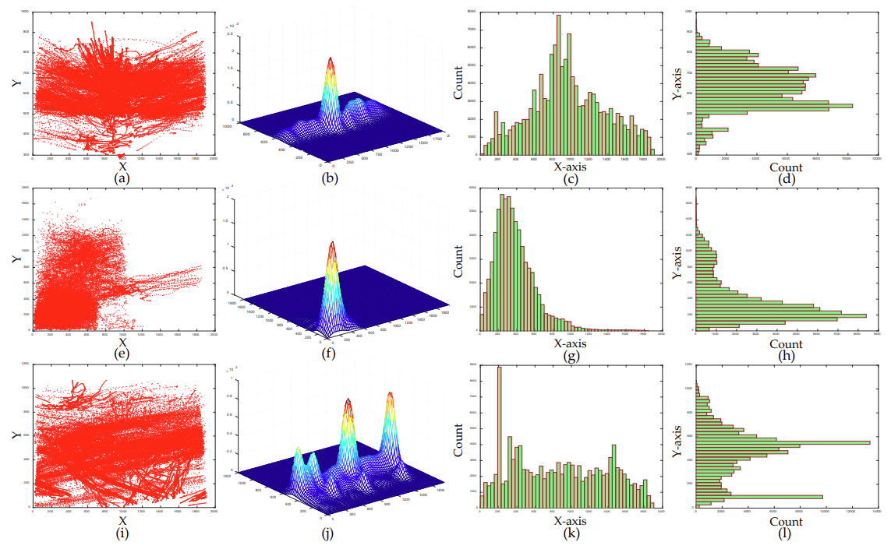 |
LSV-LP: Large-Scale Video-Based License Plate Detection and Recognition Qi Wang, Xiaocheng Lu, Cong Zhang, Yuan Yuan, Xuelong Li IEEE Transactions on Pattern Analysis and Machine Intelligence (T-PAMI, IF=24.3134, CCF-A, JCR-Q1), 2022. |
| /*Conference*/ | |
| 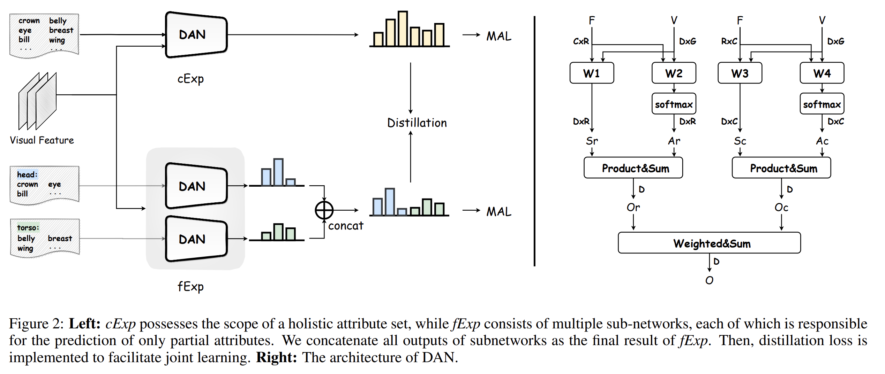 |
Dual Expert Distillation Network for Generalized Zero-Shot Learning Zhijie Rao, Jingcai Guo, Xiaocheng Lu, Jingming Liang, Jie Zhang, Haozhao Wang, Kang Wei, Xiaofeng Cao International Joint Conference on Artificial Intelligence (IJCAI, CCF-A), 2024 |
| 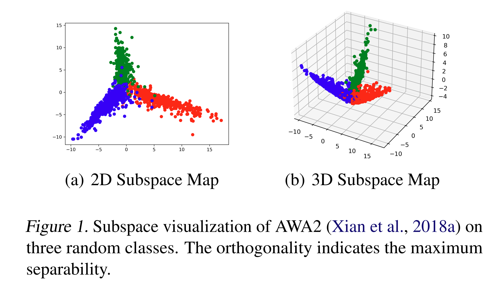 |
ParsNets: A Parsimonious Composition of Orthogonal and Low-Rank Linear Networks for Zero-Shot Learning Jingcai Guo, Qihua Zhou, Ruibin Li, Xiaocheng Lu, Ziming Liu, Junyang Chen, Xin Xie, Jie Zhang International Joint Conference on Artificial Intelligence (IJCAI, CCF-A), 2024[paper] |
| 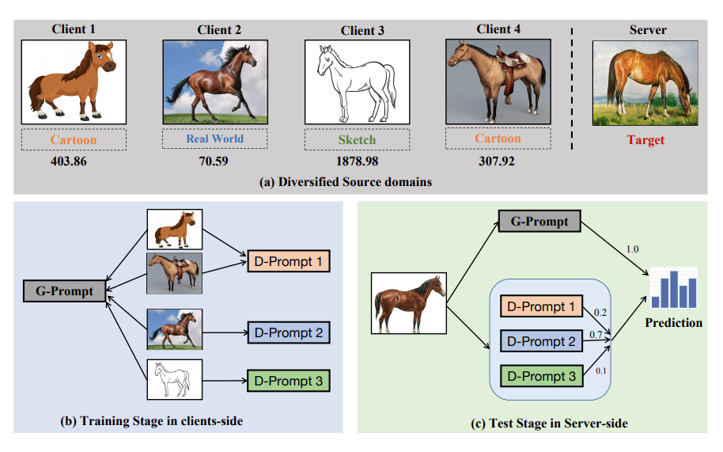 |
DiPrompT: Disentangled Prompt Tuning for Multiple Latent Domain Generalization in Federated Learning Sikai Bai, Jie Zhang, Shuaicheng Li, Song Guo, Jingcai Guo, Jun Hou, Tao Han, Xiaocheng Lu Proceedings of Computer Vision and Pattern Recognition (CVPR, CCF-A), 2024[paper] |
| 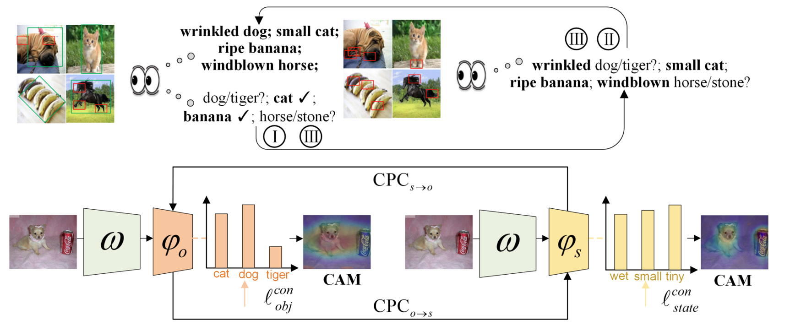 |
ProCC: Progressive Cross-Primitive Compatibility for Open-World Compositional Zero-Shot Learning Fushuo Huo, Wenchao Xu, Song Guo, Jingcai Guo, Haozhao Wang, Ziming Liu, Xiaocheng Lu AAAI Conference on Artificial Intelligence (AAAI, CCF-A), 2023.[paper] |
| 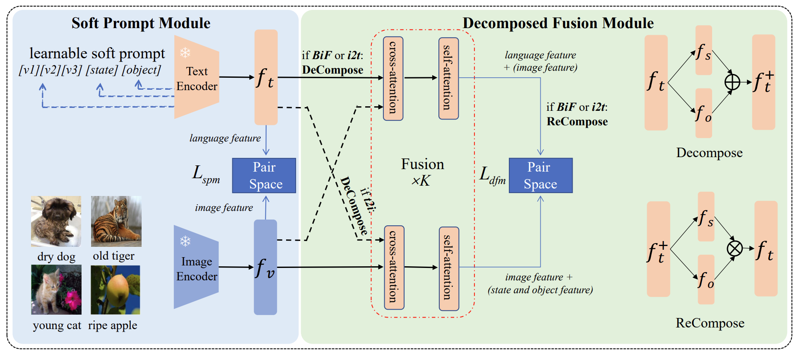 |
Decomposed Soft Prompt Guided Fusion Enhancing for Compositional Zero-Shot Learning Xiaocheng Lu, Song Guo, Ziming Liu, Jingcai Guo Proceedings of Computer Vision and Pattern Recognition (CVPR, CCF-A), 2023. |
| 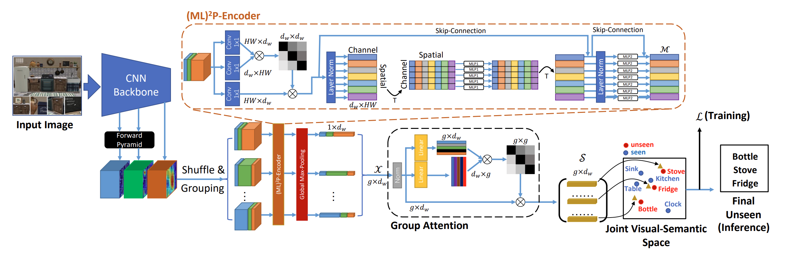 |
(ML)^2P-Encoder: On Exploration of Channel-class Correlation for Multi-label Zero-shot Learning Ziming Liu, Song Guo, Xiaocheng Lu, Jingcai Guo, Jiewei Zhang, Yue Zeng, Fushuo Huo Proceedings of Computer Vision and Pattern Recognition (CVPR, CCF-A), 2023. |
| 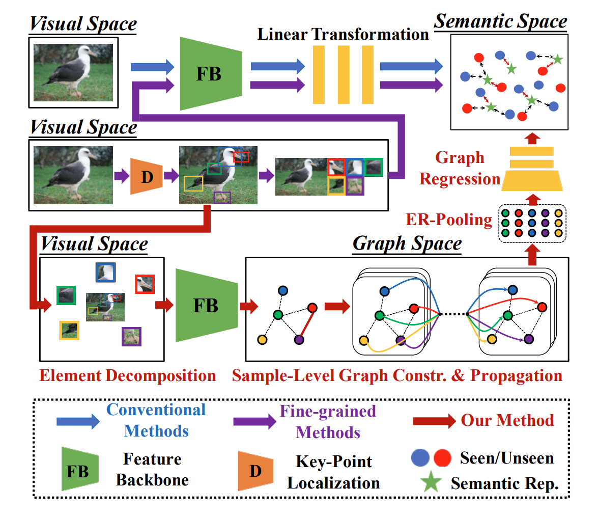 |
Graph Knows Unknowns: Reformulate Zero-Shot Learning as Sample-Level Graph Recognition Jingcai Guo, Song Guo, Qihua Zhou, Ziming Liu, Xiaocheng Lu, Fushuo Huo AAAI Conference on Artificial Intelligence (AAAI, CCF-A), 2023.[paper] |
| 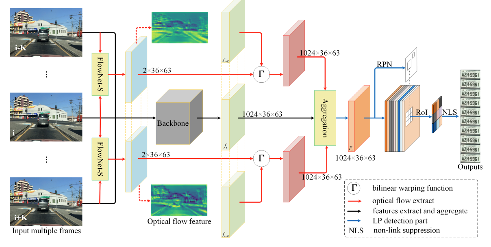 |
AWFA-LPD: Adaptive Weight Feature Aggregation for Multi-frame License Plate Detection Xiaocheng Lu, Yuan Yuan, Qi Wang Proceedings of ACM International Conference on Multimedia Retrieval (ICMR, CCF-B), 2021.[paper] |
Honors & Awards
| ...... |
| [03/2022] Outstanding Graduate Student (Top 10%). |
| [09/2021] Campus Job Offers: Bytedance, Baidu, Huawei, etc. |
| [01/2020] Huawei Cloud Artificial Intelligence Innovation Application Competition (Top 2%). |
| [08/2017] National University Student NXP Cup Smart Car Competition National Finals Grand Prize (1st in 300+ teams). |
Professional Services
-
Student Reviewers:
Computer Vision and Pattern Recognition (CVPR)
International Conference on Computer Vision (ICCV)
Conference and Workshop on Neural Information Processing Systems (NeurIPS)
International Conference on Learning Representations (ICLR)
AAAI Conference on Artificial Intelligence (AAAI)
IEEE Transactions on Pattern Analysis and Machine Intelligence (TPAMI)
Teaching
| 2024-2025 | Fall | COMP2011, Programming with C++ |